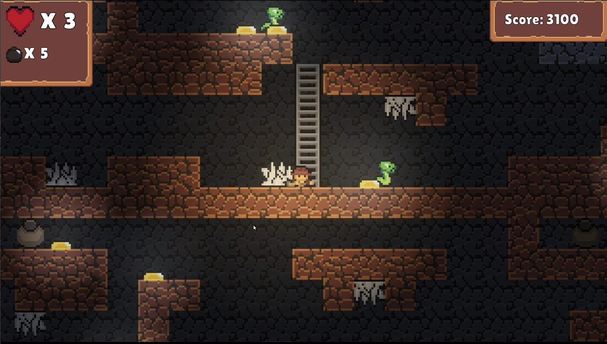

Spelunky-inspired Prototype
This prototype was first made for an earlier course, Game Programming 2, where the main thing I was doing was a state machine for the player character. I later continued the prototype for a short amount of time to add some procedural generation, heavily inspired by how the procedural generation in the original Spelunky works. The player movement and state machine is not very polished and if I were to do this again, I would probably look more into making a hierarchical state machine for a more organized and easy-to-use system. But overall, I got to learn quite a bit about both state machines and procedural generation.
Procedural Generation
The general algorithm for the procedural generation in this prototype was not very advanced, but what I learned the most about is some ways of thinking when making procedural generation. I learnt about what ways the procedural generation contributes to the game experience, for example by making the player have to learn the game mechanics rather than some level layout and game replayability.
Moreover, I also researched some different methods for procedural generation, such as having a tag based system for choosing what rooms to place in a level, which was used in this prototype. Unfortunately, there are not too many room templates, and I did not have too much time to spend on designing the room layouts, which results in the levels not being very interesting.

Some of my contributions:
- Player Movement
- Player (and enemy) state machine
- Procedural Level Generation
- Lighting
- Room design
- All the sprites